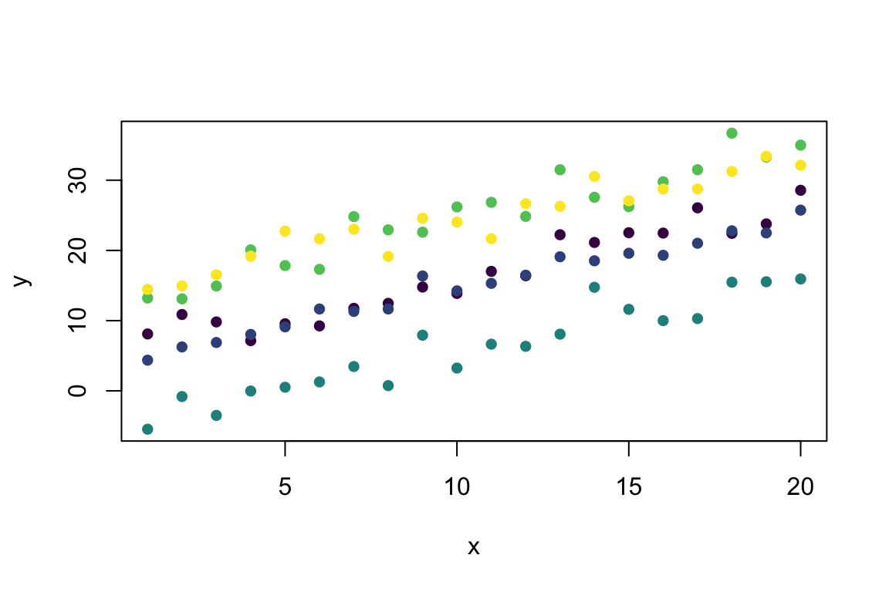

This page was last updated on March 04, 2024.
Simulation is an important tool for carrying out computational and
statistical biology. This page provides basic guidance on how to
simulate data in R.
R comes with built in tools that allow you to simulate from
well-known probability distributions like the normal, Poisson, binomial,
uniform, chi-squared, and so on (for a complete list see:
help(Distributions) )
There are 4 functions for working with distributions that have the general form:
dxxx for the density/mass function (PDF/PMF)pxxx for the cumulative distribution function
(CDF)qxxx for the quantile functionrxxx for random number generationThe rnorm function is the base function for simulating
random numbers drawn from a normal distribution. For more information on
working with the normal distribution see help(Normal)
rnorm(n = 5, # number of observations
mean = 0, # vector of means
sd = 1) # vector of standard deviations## [1] 0.9292822 -0.5400102 0.3888561 0.6883740 -0.3182096Because rnorm is expecting a vector for each entry, this
function is very flexible. For example we can sample 5 values from
normal distributions with different means and different standard
deviations without having to re-write the function 5 times.
rnorm(n = 5, # number of observations
mean = c(1,2,3,4,5), # vector of means
sd = 1:5) # vector of standard deviations## [1] 1.2498073 -0.9757693 3.3401746 2.7933487 9.5897252The rpois function is the base function for simulating
random numbers drawn from a Poisson distribution. For more information
on working with the Poisson distribution see
help(Poisson)
Note: Will only return whole numbers
rpois(n = 5, # number of observations
lambda = 1) # vector of (non-negative) rate parameters## [1] 3 0 1 1 1Because rpois is expecting a vector for each entry, this
function is very flexible. For example we can sample 5 values from
Poisson distributions with different rate parameters \(\lambda\), without having to re-write the
function 5 times.
rpois(n = 5, # number of observations
lambda = c(1,2,3,4,5)) # vector of (non-negative) rate parameters## [1] 4 1 3 3 5The rbinom function is the base function for simulating
random numbers drawn from a binomial distribution. For more information
on working with the binomial distribution see
help(Binomial)
rbinom(n = 5, # number of observations
size = 1, # number of trials (zero or more)
prob = 0.5) # probability of success on each trial.## [1] 1 1 0 1 1If we change the number of trials we get the number of successes across the number of trials. In this example we have simulated the number of successes in 5 replicates of 20 trials.
rbinom(n = 5, # number of observations
size = 20, # number of trials (zero or more)
prob = 0.5) # probability of success on each trial.## [1] 9 11 13 6 9Because rbinom is expecting a vector for each entry,
this function is very flexible. For example we can simulate the number
of successes in 5 replicates of 20 trials, with a different probability
of success in each trial
rbinom(n = 5,
size = 20,
prob = c(0.2, 0.4, 0.6, 0.8, 1))## [1] 7 6 11 16 20The runif function is the base function for simulating
random numbers drawn from a uniform distribution. For more information
on working with the uniform distribution see
help(Uniform)
runif(n = 5, # number of observations
min = 0, # lower limit of the distribution. Must be finite.
max = 20) # upper limit of the distribution. Must be finite.## [1] 17.987552 9.647930 2.473959 8.949474 7.207020Unlike the other distributions runif is not expecting
vector for the min and max arguments, so this
function does not have the same amount of inherent flexibility.
When simulating random numbers, setting the random number seed with
set.seed() ensures reproducibility of the sequence of
random numbers.
For example, we can sample 5 random numbers from a normal
distribution with rnorm().
rnorm(5)## [1] -0.6492053 0.2139160 0.3039883 0.8384097 -2.1987446If we do this a second time the sequence of numbers will always be different.
rnorm(5)## [1] 0.5536470 1.7212545 -1.1749499 0.2249237 1.1383464But if we want to be sure we can get the same sequence of randomly generated numbers every single time, we have to set the seed prior to simulating.
set.seed(1)
rnorm(5)## [1] -0.6264538 0.1836433 -0.8356286 1.5952808 0.3295078set.seed(1)
rnorm(5)## [1] -0.6264538 0.1836433 -0.8356286 1.5952808 0.3295078Simulating from a simple linear model is fairly straightforward and requires only a few lines of code. These models have both a deterministic component, and a stochastic component. The minimal requirements for simulating the deterministic part of this type of model are defining the intercept, \(\beta_0\), and slope, \(\beta_1\), and to set up the \(x\) values you are interested in. These pieces can then be used to calculate the deterministic part of the model using the standard equation for a linear model \(y = \beta_0 + \beta_1 \times x\).
B_0 <- 2
B_1 <- 1
x <- 1:20
y_det <- B_0 + B_1 * x
y_det## [1] 3 4 5 6 7 8 9 10 11 12 13 14 15 16 17 18 19 20 21 22With the deterministic part specified, the next step is to add the
stochastic component to the model. Here what we want is 20 random,
normally distributed values, each with a mean equal to the deterministic
component. This can be achieved by combining the deterministic
predictions with the rnorm() function
y <- rnorm(n = 20, mean = y_det, sd = 2)
y## [1] 1.359063 4.974858 6.476649 7.151563 6.389223 11.023562 9.779686
## [8] 8.757519 6.570600 14.249862 12.910133 13.967619 16.887672 17.642442
## [15] 18.187803 19.837955 20.564273 20.149130 17.021297 23.239651Note: This same result could be achieved by adding mean 0 error to each deterministic prediction because errors are additive for this model \(y_i = \beta_0 + \beta_1 \times x_i + \varepsilon_i, \quad \varepsilon_i \sim \mathcal{N}(0, \sigma^2)\).
y <- B_0 + B_1 * x + rnorm(n = 20, mean = 0, sd = 2)
y ## [1] 2.887743 3.688409 2.058495 5.043700 7.835883 10.717359 8.794425
## [8] 10.775343 10.892390 9.245881 12.170011 13.211420 14.881373 18.200051
## [15] 18.526351 17.670953 18.493277 21.393927 22.113326 20.622489The problem with building a simulation this way, however, is that errors are only additive for the normal distribution, so this does not work for stochasticity that is drawn from other distributions.
If you intend on carrying out anything more than a simple simulation, it is usually more efficient to package everything together into a custom function.
Linear <- function(x){
B_0 <- 2
B_1 <- 1
sigma <- 2
y_det <- B_0 + B_1 * x
y <- B_0 + B_1 * x + rnorm(n = length(x),
mean = y_det,
sd = sigma)
y
}
Linear(1)## [1] 4.58501Linear(1:5)## [1] 6.729164 9.537066 9.775308 13.762215 14.796212Simulating from a linear model with a log link and Poisson errors is fairly straightforward and requires only a few lines of code. These models have both a deterministic component, and a stochastic component. The minimal requirements for simulating the deterministic part of this type of model are defining the intercept, \(\beta_0\), and slope, \(\beta_1\), to set up the \(x\) values you are interested in, and to specify the link function. These pieces can then be used to calculate the deterministic part of the model using the standard equation for a linear model with a log link \(y = e^{\beta_0 + \beta_1 \times x}\).
B_0 <- 0.01
B_1 <- 0.03
x <- 1:20
y_det = exp(B_0 + B_1*x)
y_det## [1] 1.040811 1.072508 1.105171 1.138828 1.173511 1.209250 1.246077 1.284025
## [9] 1.323130 1.363425 1.404948 1.447735 1.491825 1.537258 1.584074 1.632316
## [17] 1.682028 1.733253 1.786038 1.840431With the deterministic part specified, the next step is to add the
stochastic component to the model. Here what we want is 20 random values
drawn from a Poisson distribution, each with a rate parameter, \(\lambda\), equal to the deterministic
component (remember, with the Poisson distribution the mean and variance
are equal). This can be achieved by combining the deterministic
predictions with the rpois() function.
y <- rpois(n = length(x), lambda = y_det)
y## [1] 0 4 1 0 0 1 3 1 4 2 1 1 0 0 2 0 1 2 6 2If you intend on carrying out anything more than a simple simulation, it is usually more efficient to package everything together into a custom function.
Poisson <- function(x) {
B_0 <- 0.01
B_1 <- 0.03
y_det = exp(B_0 + B_1*x)
y <- rpois(n = length(x), lambda = y_det)
y
}
Poisson(1)## [1] 1Poisson(1:5)## [1] 0 2 1 1 0If you are trying to simulate an over-dispersed system, you can also consider switching from a Poisson distribution to a negative binomial distribution.
NegBinom <- function(x) {
B_0 <- 0.01
B_1 <- 0.03
y_det = exp(B_0 + B_1*x)
y <- rnbinom(n = length(x), mu = y_det, size = 5) # Here size is the dispersion parameter
y
}
NegBinom(1)## [1] 0NegBinom(1:5)## [1] 0 4 1 0 2Simulating from a linear model with a logit link and binomial stochasticity is no different from simulating from other, simpler models. The minimal requirements for simulating the deterministic part of this type of model are defining the intercept, \(\beta_0\), and slope, \(\beta_1\), to set up the \(x\) values you are interested in, and to specify the link function (here a logit link). These pieces can then be used to calculate the deterministic part of the model using the standard equation for a linear model with a logit link \(y = \frac{e^{\beta_0 + \beta_1 \times x}}{1 + e^{\beta_0 + \beta_1 \times x}}\).
B_0 <- 0.01
B_1 <- 0.03
x <- 1:20
y_det = exp(B_0 + B_1*x) / (1 + exp(B_0 + B_1*x))
y_det## [1] 0.5099987 0.5174929 0.5249792 0.5324543 0.5399149 0.5473576 0.5547792
## [8] 0.5621765 0.5695462 0.5768853 0.5841905 0.5914590 0.5986877 0.6058737
## [15] 0.6130142 0.6201064 0.6271478 0.6341356 0.6410674 0.6479408With the deterministic part specified, the next step is to add the
stochastic component to the model. Here what we want is 20 random values
drawn from a binomial distribution, each with a probability of success
equal to the prediction of our deterministic model. This can be achieved
by combining the deterministic predictions with the
rbinom() function.
y <- rbinom(n = length(x), size = 1, prob = y_det)
y## [1] 0 0 1 1 1 1 1 1 1 1 1 0 1 0 0 1 1 1 0 1As always, if you intend on carrying out anything more than a simple, one-off simulation, it is usually more efficient to package everything together into a custom function.
Logit_Link <- function(x) {
B_0 <- 0
B_1 <- 0.03
y_det = exp(B_0 + B_1*x)/(1+exp(B_0 + B_1*x))
y <- rbinom(n = length(x), size = 1, prob = y_det)
y
}
Logit_Link(1)## [1] 0Logit_Link(1:5)## [1] 0 0 1 1 0We often work with nested data, where there can be some normally distributed differences between groups (species, treatments, study sites, etc.). To simulate nested data with random slopes or intercepts, we need to first define the population level parameters, and then draw the individual variation around the population level trends from a mean 0 normal distribution. In essence, this requires adjusting the population level parameters by some normally distributed amount for each group.
library(viridis)
#5 groups each with 4 data points
group <- factor(rep(1:5, each = 20)) # 5 groups sampled 20 times
x <- rep(1:20, 5) # Define x values
Mixed_Linear <- function(x, group) {
B_0 <- 2 # Pop. level intercept
B_1 <- 1 # Pop. level slope
Rand_Int <- rnorm(n = unique(group), sd = 10) # Random Intercepts
y_det = (B_0 + Rand_Int[group]) + B_1*x # Deterministic prediction
rnorm(n = length(x), mean = y_det, sd = 2) # Add stochasticity
}
y <- Mixed_Linear(x, group) # Predict from the model
plot(y ~ x, col = viridis(5)[group], pch = 16) # Visualise with viridis colours
group <- factor(rep(1:5, each = 20)) # 5 groups sampled 20 times
x <- rep(1:20, 5) # Define x values
Mixed_Linear <- function(x, group) {
B_0 <- 2 # Pop. level intercept
B_1 <- 1 # Pop. level slope
Rand_Slope <- rnorm(n = unique(group)) # Random Slopes
y_det = B_0 + (B_1+ Rand_Slope[group])*x # Deterministic prediction
rnorm(n = length(x), mean = y_det, sd = 2) # Add stochasticity
}
y <- Mixed_Linear(x, group) # Predict from the model
plot(y ~ x, col = viridis(5)[group], pch = 16) # Visualise with viridis coloursgroup <- factor(rep(1:5, each = 20)) # 5 groups sampled 20 times
x <- rep(1:20, 5) # Define x values
Mixed_Linear <- function(x, group) {
B_0 <- 2 # Pop. level intercept
B_1 <- 1 # Pop. level slope
Rand_Int <- rnorm(n = unique(group), sd = 20) # Random Intercepts
Rand_Slope <- rnorm(n = unique(group), sd = 3) # Random Slopes
y_det = (B_0 + Rand_Int[group]) + (B_1+ Rand_Slope[group])*x # Deterministic prediction
rnorm(n = length(x), mean = y_det, sd = 2) # Add stochasticity
}
y <- Mixed_Linear(x, group) # Predict from the model
plot(y ~ x, col = viridis(5)[group], pch = 16) # Visualise with viridis colours